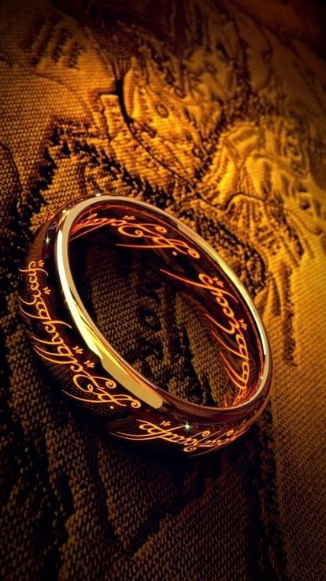
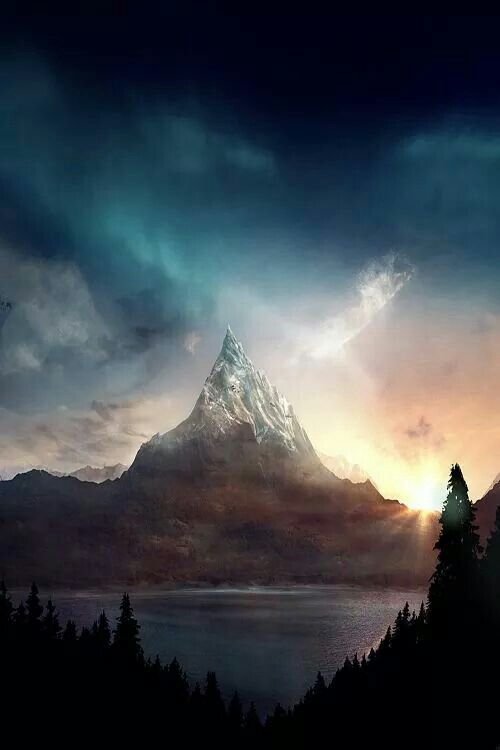
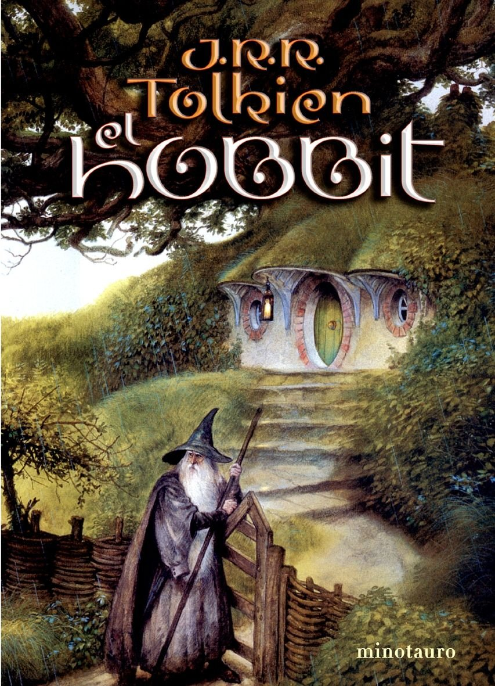
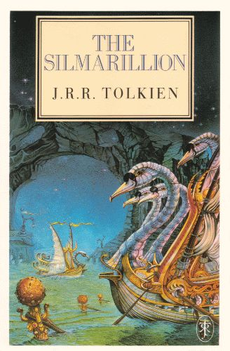

💍 El Anillo Único

Descubre el origen del artefacto de Sauron, las inscripciones en la Lengua Negra y el peso que corrompió a los grandes reyes de los hombres.
Explorar LoreEl portal definitivo para los apasionados del universo de J.R.R. Tolkien
Adéntrate en los secretos de Arda. Desde la creación del mundo por Ilúvatar hasta las heroicas batallas de la Tercera Edad. Aquí encontrarás análisis profundos, cronologías detalladas y las mejores recomendaciones para expandir tu biblioteca tolkiendil.

Descubre el origen del artefacto de Sauron, las inscripciones en la Lengua Negra y el peso que corrompió a los grandes reyes de los hombres.
Explorar Lore
Analizamos de forma definitiva la pregunta más repetida: ¿Por qué las Grandes Águilas de Manwë no volaron directamente hacia el Monte del Destino?
Leer DebateSi quieres empezar a leer pero te abruma el orden, te recomendamos las mejores ediciones para tu colección:

La aventura inicial de Bilbo Bolsón, perfecta para comenzar el viaje.
Recomendado ★★★★★ Ver en Amazon
Para los que buscan la mitología profunda y la creación de los Silmarils.
Nivel Avanzado 🔥 Ver en Amazon